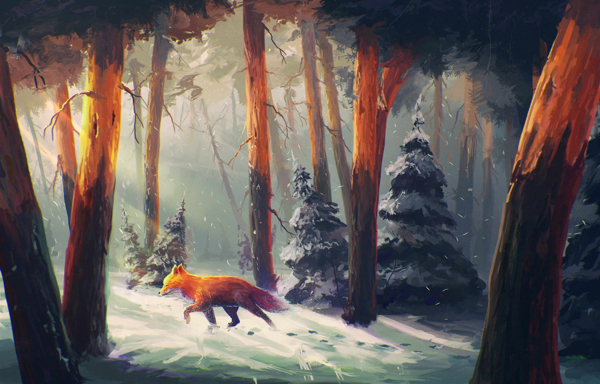

Explore Further
MORE
Three chapters of deeper knowledge. Choose your path into the world of the Red Fox.

Chapter 01
Deeper
Biology & Data
Deeper
Knowledge
Fox facts, subspecies comparison, and habitat temperature data from around the globe.
Enter →
Chapter 02
Timeline
Evolution
Timeline
of the Fox
10 million years of evolution — from prehistoric canid to the world's most widespread carnivore.
Enter →
Chapter 03
Sounds of
Audio & Science
Sounds of
the Wild
Interactive visualization of Red Fox vocalizations — from the iconic scream to quiet contact calls.
Enter →